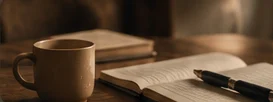

Как бросить пить и не начать снова?

Я выздоровевший алкоголик. И на основании собственного опыта могу сказать довольно странную вещь: для меня бросить пить невозможно. Но я могу остановиться. И могу не начинать пить снова. В чём разница?
Почему мне не удавалось контролировать употребление
Много лет я пытался научиться пить так, чтобы не напиваться: только по выходным или праздникам, без крепкого алкоголя, ограничиваясь пивом или сухим вином. Давал себе обещания, придумывал правила. Иногда даже какое-то время их соблюдал.
Но рано или поздно всё повторялось. После первой рюмки я уже не мог гарантировать, сколько выпью, когда остановлюсь и чем всё закончится. В конце концов пришлось признать неприятную вещь: я годами пытаюсь научиться тому, что у меня не получается. Для меня контроль употребления не работал.
Тогда я перестал искать способ выпить немного и задал себе другой вопрос: если я не могу контролировать употребление, что мне делать? Ответ казался очевидным: не пить первую рюмку.
Почему я снова начинал пить, зная о последствиях
И тут обнаружилась проблема посерьёзнее. Я прекрасно помнил похмелье, отходняки, панические атаки, скандалы в семье и неприятности на работе. Давал себе самые искренние обещания. И всё-таки в какой-то момент снова решал выпить.
«Ну, в этот раз я не напьюсь. Выпью для настроения и остановлюсь. Скандала не будет, на работу пойду». Сколько раз я себе это говорил! Потом опять напивался, опять скандал, опять проблемы.
Желание выпить возникало ещё до первой рюмки. Я мог оставаться трезвым, но вспоминал, какое облегчение приносил алкоголь, и постепенно убеждал себя, что теперь всё будет иначе. А после первой рюмки желание продолжать нередко усиливалось, и придуманные заранее ограничения теряли смысл.
Итак, мне было важно не начинать пить. Только знать это — одно, а суметь сделать — совсем другое. Как не начинать, если собственное мышление снова и снова предлагает алкоголь как выход? Мне предстояло не просто прекратить употребление, а научиться жить без алкоголя. Для этого существуют вполне конкретные инструменты.
Как удержаться от первой рюмки?
Что делать, когда желание выпить становится настолько сильным, что никакие разумные доводы уже не помогают?
Использовать любые доступные средства, которые помогут не начать пить.
Обратиться к наркологу, обсудить медикаментозное лечение, в том числе методы, которые принято называть кодированием. При необходимости пройти лечение под медицинским наблюдением. Обратиться к психологу или консультанту по зависимостям, пойти на собрание Анонимных Алкоголиков.
Если накатывает желание выпить, не стоит оставаться с ним один на один. Можно позвонить человеку, который понимает проблему, выйти из привычной обстановки, где доступен алкоголь, попросить помощи.
Есть и совсем простые вещи, о которых легко забыть: стараться не оставаться голодным, одиноким, злым или измотанным. Следить за своим состоянием, нормально есть и отдыхать. Не создавать себе лишних ситуаций, в которых придётся испытывать собственную силу воли.
Не существует одного инструмента, одинаково подходящего всем. Лекарственные препараты и медицинские процедуры должен подбирать врач. А при физической зависимости резкое прекращение употребления может быть опасным и потребовать медицинской помощи.
Сейчас важно другое: сделать всё необходимое, чтобы не выпить первую рюмку.
Но здесь возникает следующий вопрос.
Достаточно ли просто не пить?
Предположим, я остановился. Прошёл месяц, полгода, несколько лет. Всё это время я не пью.
Означает ли это, что я выздоровел?
А если каждое утро начинается с борьбы с самим собой? Если алкоголь по-прежнему кажется мне лучшим способом получить удовольствие, расслабиться, пережить неприятности? Если я продолжаю хотеть выпить, но удерживаюсь благодаря страху, запрету, лекарствам или постоянным волевым усилиям?
Я не пью. Но алкоголь по-прежнему занимает огромное место в моей жизни.
Именно здесь проходит принципиальная граница между воздержанием и выздоровлением.
Воздержание необходимо: пока я продолжаю употреблять алкоголь, говорить о решении проблемы бессмысленно. Но само по себе отсутствие алкоголя ещё не означает, что исчезли причины, по которым я к нему возвращался.
Если вся моя трезвость держится исключительно на попытках подавить желание выпить, опасность срыва сохраняется. Можно годами воздерживаться, но внутренне продолжать ждать возможности снова употребить алкоголь.
Поэтому полное воздержание — не конечная цель, а необходимое условие для начала выздоровления.
Мне предстояло решить другую задачу: не просто научиться обходиться без алкоголя, а изменить своё отношение к нему и собственную жизнь настолько, чтобы исчезла сама потребность возвращаться к опьянению.
Как этого добиться — уже следующий вопрос.